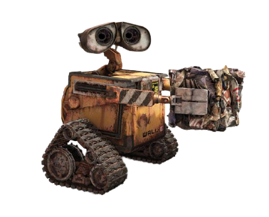

<div class="data-loss">
  <div mat-dialog-content>
    <p>У Вас остались несохранённые данные!</p>
    <p>Несохранённые данные потеряются при закрытии этой страницы!</p>
  </div>
  <div class="image">
    
  </div>
  <div mat-dialog-actions align="center">
    <button mat-button color="primary" [mat-dialog-close]="false" cdkFocusInitial class="focus-button">
      <span>Вернуться</span>
    </button>
    <button mat-button [mat-dialog-close]="true">
      <span>Покинуть без сохранения</span>
    </button>
  </div>
</div>